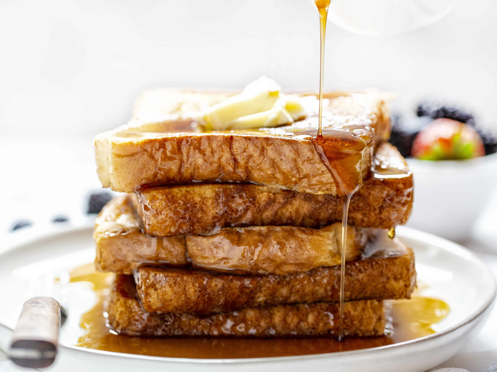

French Toast
A French Toast recipe is perfect for an all-you-can-eat breakfast

Ingredients
- 1 egg
- 1 teaspoon Vanilla Extract
- 1/2 teaspoon Ground Cinnamon
- 1/4 cup milk
- 4 slices bread
Directions
- Beat egg, vanilla and cinnamon in shallow dish with wire whisk. Stir in milk.
- Dip bread in egg mixture, turning to coat both sides evenly.
- Cook bread slices on lightly greased nonstick griddle or skillet on medium heat until browned on both sides.